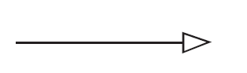

Object Oriented Software Engineering
OOSE is a software design technique that is used in software design in Object OrientedP.
It consists of two terms – object oriented, and software engineering.
Object Oriented
It is a collection of information that itself act as a singular entity. It allows the user to focus completely on the task rather than on the tools.
For example – C++, etc.
With the help of this, reusability as well as abstraction is possible.
The necessity of developing a maintaining a large-size, complex, and varied functionalities software system has caused us to look for new approaches of software design and development.
The conventional approaches like Waterfall Model may not be very useful due to non-availability of iterations, no provision of reuse, and difficulty in incorporating changing requirements.We may also build every software system from scratch that results into a costly software system, including very high maintenance cost.
An object oriented approach may address such issues, that’s why it has become very popular in designing,developing, and maintaining large size software systems. Object oriented approach’s modelling ability helps us to represent the real world situations and visualize them.
Software Engineering
It is a profession dedicated to designing, implementing and modifying so that the software is more affordable, maintainable, faster to build, and high quality.
OR
The establishment and use of some engineering principles in order to obtain economically developed software that is reliable and works efficiently on real machines.
Software
It is a combination of programs, documentation and operating manual.
Program
A certain set of instructions that are written for a specific purpose. It may contain statements to enhance the readability of the program.
Documentation
Documentation is created and used during development. It is used to explain the code, what it does, and why it has been coded in a certain way.
Operating Manual
Explains to the customer how the software is to be used. It is delivered along with the software to the customer, at the time of release.
The use of use cases was introduced in Object Oriented Methodology.
Characteristics of Software
Bathtub and software curve bs
Object Oriented Basic Concepts
- Classes
- Objects
- Data Abstraction
- Encapsulation
- Inheritance
- Polymorphism
Classes
A class represents a template for different objects and describes how these objects are structured internally. Objects of the same class have the same definition, both for the operations, and for the information structures.
OR
It is a collection of objects and it doesn’t take any space in memory. It is also called a blueprint, or a logical entity.
There are two types:
Pre-defined
Their logic is already written somewhere, and we can use it by importing. For example - Scanner, Console, etc. in Java
User-defined
The logic for these classes is defined by the programmer.
Objects
Fundamental entities used to model any system. Anything and everything can be an object. It contains data(attributes) and operations(behaviors).
Encapsulation
The wrapping up of data and functions into a single unit. It is also known as information hiding concept.
Data is hidden from the outside world. The only way to get and modify the data is through operations that are meant to operate on that data. This helps in minimizing impact of changes in the program.
Inheritance
Deriving a new class from existing class in such a way that the new class can access all the features and properties of the existing class.
The existing class is called parent class, super class, base class. The new class is called child class, subclass, derived class.
Polymorphism
The ability of an instruction,message,etc. to take many forms in an object oriented system is called polymorphism.
Sender of a stimulus (message) doesn’t need to know the receiver’s class. The receiver can belong to an arbitrary class.
Achieved through function overriding.
For eg - Superclass OutputDevice, with Subclasses Printer and Monitor. Both have a function called ShowData(). Both implement it differently, and a program calling obj.ShowData() doesn’t need to know whether obj is a Printer or Monitor. As long as it is an OutputDevice, the program can call the function. The behaviour of the function depends on which subclass is being used.
Data Abstraction
Hiding of complexity of data and operations. Irrelevant details are hidden and important details are amplified to the outside world.
Object Oriented Software Development (OOSD)
The major phases of software development using the object oriented methodology are:
Object Oriented Analysis
In this stage, problem is formulated. User Requirements are identified and then a model is built, based upon real world objects.
The analysis produces models on how the desired system should function and how it must be developed.
The models do not include any implementation details, so that it can be understood by any non-technical application expert.
Object Oriented Design
Object Oriented Design includes two main stages.
System Design
In this stage, the complete architecture of the desired system is designed. The system is conceived as a set of interacting subsystems, that in turn are composed of a hierarchy of interacting objects, grouped into classes.
System Design is done according to both the system analysis model, and proposed system architecture.
Here, the emphasis is on the objects comprising the system, rather than the processes in the system.
Object Design
In this phase, a design model is developed based on both the models in the system analysis phase and the architecture designed in the system design phase.
All the classes required are identified. The designer decides where
The new classes are to be created from scratch.
Any existing classes can be used in their original form,or
New classes should be inherited from the existing classes.
The associations between the identified classes are established and the hierarchy of the classes are identified.
Besides this, the developer designs the internal details of the classes, and their associations, i.e, the data structure for each attribute, and the algorithm for the operations
Object Oriented Implementation + Testing
In this stage, the design model developed in the object design is translated into code in an appropriate programming language or software tool. The databases are created and the specific hardware requirements are ascertained. Once the code is in shape, it is tested using different techniques in order to identify and remove errors from the code.
Coad/Yourdon Methodology
Known as Object Oriented Analysis
- Identify classes and objects (study environment and document behaviours)
- Identification of Structures (identify is-a and whole-part relationships)
- Definition of Subjects (each structure is classified into a subject)
- Definition of Attributes
- Definition of Services (methods)
Rumbaugh Methodology
Known as Object Modelling Technique (OMT)
Analysis Phase
- Object Model - Static aspects of system
Classes and inheritance relationships are extracted from problem statement.
- Dynamic Model - Behavioural aspects of object model and describes state of the system
Identifies states and events in classes identified by object model.
- Functional Model - Represents functional aspects of the system
Depicts functionality of the system by creating data flow diagrams.
Sys Design - HLD is developed taking implementation env., including DBMS,etc. into account.
Object Design - Objects are defined in detail. Algorithms and operations defined.
Implementation
Booch Methodology
Object Oriented Design - Combines analysis, design and implementation. Iterative and incremental.
Macro Process
High Level Process
- Establish requirements - Context diagram, prototypes
- Analysis Model - Use case model, identification and prioritization of risks.
- Design of Architecture
- Evolution in the form of refinements - Implementation
- Maintenance of delivered functionality - Post deployment activities
Micro Process
Lower level process.
- Identification of classes and objects
- Identification of semantics of classes and objects
- Identification of relationships btw classes and objects
- Specification of interfaces and implementation of classes and objects
Jacobson Methodology
OOSE methodology, 5 models:
- Requirement model - Gather s/w requirements. Use cases, actors, etc.
- Analysis model - Create robust and ideal structure of objects. Identify interface objects, DB related objects, control objects, etc.
- Design model - Refine the object w.r.t implementation environment. Objects become blocks.
- Implementation model - Implements the objects (blocks) into modules.
- Test model - Validate and verify the functionality of the system
OO Modelling and UML
Object oriented modelling - constructing visual models based on real world objects - Helps in understanding problems and developing documents and producing code. - Well understood requirements, robust designs, etc, etc.
Most popular methodologies - OOD (Booch), OMT (Rumbaugh), OOSE (Jacobson). All were combined into Unified Modelling Language (UML).
- Language for visual modelling
- Allows specifying, visualizing, constructing and understanding various artifacts of the system.
- Models static and dynamic aspects of the system.
- Static aspects - Objects and their relationships
- Dynamic - Events, states and object interactions
Class, Responsibility, Collaboration (CRC)
- Class - Template consisting of attributes and operations
- Responsibility - Attributes and operations included in a class
- Collab - Other classes that a class calls to achieve its functionality.
| Traditional | OO |
|---|---|
| The system is viewed as a collection of processes. | The system is viewed as a collection of objects. |
| Data flow diagrams, ER diagrams, data dictionary and structured charts are used to describe the system. | UML models including use case diagram, class diagram, sequence diagrams, component diagrams, etc. are used to describe the system. |
| Reusable source code may not be produced. | The aim is to produce reusable source code. |
| Data flow diagrams depicts the processes and attributes. | Classes are used to describe attributes and functions that operate on these attributes. |
| It follows a top-down approach for modelling the system. | It follows a bottom-up approach for modelling the system. |
| It is non-iterative. | It is highly iterative. |
Process Framework
Software Process Framework is a foundation of complete software engineering process. It includes all the umbrella activities.

A generic process framework consists of 5 activities:
Communication
Requirement Gathering, extensive communication with customer
Planning
We discuss the technical related tasks, work schedule, risks, and required resources
Modelling
It is about building representations of things in the real world.
In modelling, a product’s model is created in order to better understand requirements
Construction
In SE, construction is the application of set of procedures that are needed to assemble the product. In this activity, we generate the code and test the product in order to maintain better product.
Deployment
In this activity, a complete or a non-complete product or software, are presented to the customers to evaluate, and give feedback.
On the basis of their feedback, we modify the products to supply a better product.
Umbrella Activities
Umbrella Activities are a set of steps or procedures that the SE team follows to maintain the progress, quality, change and risk of the overall development task.
SE is a collection of 4 related steps. These steps are presented or accessed in different approaches, in different software process models.
These steps of umbrella activities will evolve through the phases of the generic view of SE.
Software Project Tracking and Control
Before the actual development begins, a schedule for development of the software is created. Based on that schedule, the development will be done.
However, after certain period of time, it is required to review the progress of the development and to find out the actions which are in need to be taken to complete the development,testing etc.
The outcome of the review may require the software development to be rescheduled.
FTR (Formal Technical Review)
SE is done in clusters or modules. After completing each module, it is good practice to review the completed module and find out and remove errors so that the next module can be prevented.
SQA
The quality of software, such as UX, performance, load handling capacity, etc. should be tested, and make sure it matches predetermined milestones.
This reduces the task at the end of the development process. It should be conducted by dedicated teams so that the development can keep going on.
SCM (Software Config Mgmt)
It’s a set of activities designed to control change by identifying the work products that are likely to change and establish relationships among them.
Defining mechanisms for managing different versions of these work products.
Document Preparation and Production
All the project planning, and other activities, should be documented properly.
Reusability Management
This includes the packing up of each part of the software project. They can be connected, or any kind of support can be given to them, later to update or upgrade the software at user demand or time demand.
Measurement and Metrics
This will include all the measurement of every aspect of the software project.
Risk Management
It is a series of steps that helps a software team to manage and understand uncertainty. It’s a really good idea to identify, assess, estimate its impact, estimate probability of threats, and establish a plan for what to do in case the problem actually occurs.
Often combined in Object Oriented Analysis.
SDLCs
Waterfall

Advantages
- Easy to understand
- Simple to implement
- Distinct phases
Disadvantages
- Large no of documents
- Requirements freezed at start
- Working product delivered late
- Slow, may take years
- Testing is difficult
- Real projects rarely sequential
Prototyping
Advantages
- Stable requirements
- High quality system
- Low cost
Disadvantages
- Slower delivery
Iterative Enhancement
Waterfall stages in many cycles

- Partial product delivered every cycle
- Complete product delivered after several cycles
Spiral Model
Risk-based.
Rounds
- Round 0 - Feasibility study
- Round 1 - Concept of operation
- Round 2 - Top level requirement analysis
- Round 3 - Software design
- Round 4 - Design, implementation and testing
XP - Extreme Programming
Agile methodology:
- Team cohesiveness
- Customer is part of the team
- Requirement changes are accepted
- Working software produced quickly
- Progress is measured by working software and not documents
- Iterative planning instead of iterative development. Plans are changed based on learnings.
- Distributed leadership

- User Stories - only contain estimate of time taken for the feature. Requirement details taken from customer at development time.
- Release planning -
- Developers estimate story time, and customer selects the order of story development.
- Large stories may be divided into substories.
- Developer may do exploration (spike) of story
- Iteration Planning - Stories divided into tasks that are handed to developers. Working product released after each iteration.
- Dev and Unit tests -
- Important tasks chosen by customers and implemented.
- Pair Programming
- Refactoring
- Automated unit tests
- Acceptance Testing - Automated black box acceptance tests are created from user stories. Customer runs and verifies them.
- Working product Released.
Object Oriented SDLCs
Difference btw Conventional and OOP SDLCs
| Conventional | OO | |
|---|---|---|
| Methodology | Functional, process driven | Object Driven |
| Requirement | DFD, ER, Data dictionary | Use-case approach |
| Analysis | DFD, ER, Data dictionary | Object identification and description, attribute and function determination |
| Design | Structure chart, flowchart, pseudocode | Class Diagram, Sequence Diagram, Object Diagram, UML |
| Implementation & Test | Implement process, functions | Implement objects and interactions among objects. |
| Documentation | Many documents at the end of each stage | Document may or may not be produced at the end of each stage |
Phases of OOSDLC
- Object Oriented Requirement Analysis
- Object Oriented Analysis
- Object Oriented Design
- Object Oriented Programming and testing
Fountain Model
- Reusability of source code
- Like a fountain with ideas and new features flowing from top to bottom
- Arrows represent iterations
- Circles represent overlapping phases.
Rational Unified Process
- Adaptable Process Framework
- Iterative
- UML
Features
- Iterative Dev - Series of iterations, feedback after each. Helps monitoring schedule and budget.
- EFfective req. elicitation - Use case approach.
- Visual Modelling - Build (abstracted) models that portray different views of the system. Use UML.
- Reusable Components - Develop and use reusable components (independent subsystem that fulfills a clear goal).
- Ensure quality - Continuously assess quality. It becomes harder to maintain quality in later stages of development.
- Change control and management - Manage and track changes
- Automated Testing - Functional as well as non-functional automated testing.
Structure of RUP
Static Structure
Describes the process in terms of roles, activities, artifacts,disciplines and workflows.
Who(roles) does what (artifacts), when (workflows), and how(activities).
Roles perform activities to produce artifacts.
- Roles describe the position or function of a particular person. One person may have multiple roles.
- Activities describe the tasks/work performed by a person in a specific role.
- Artifacts are outputs produced during the development, design, etc. phases.They may be final products or inputs to the next phases.
- Roles are associated with activities.
- Activities are associated with artifacts.
- Workflows consist of a series of activities to produce a particular output.
- Disciplines are used to organize a set of
activities. RUP consists of 6 major disciplines.
- Business Modelling
- Requirement
- Analysis & Design
- Implementation
- Testing
- Deployment
Roles - Manager, Analyst, Tester, Developer, Designer.
Activities - Review Requirement, Generate use case, Define class, Prepare test plan.
Artifacts - SRS, Use case model, Class model, Design document, Source code, Test plan, user manual.
Dynamic Structure
Organized along time. It has 4 phases.
- Inception
- Elaboration
- Construction
- Transition
These 4 phases run iteratively. Each iteration produces a new version of the software.
Inception
- Initial Stage, non-iterative.
- How feasible is the project, what are the risks, what are the high level requirements, how long will it take?
Essential Activities:
- Scope and boundary of project
- Cost And schedule
- Iteration Plan
- High level risks
- Significant use cases and actors.
Artifacts produced:
- Vision Document
- Business Model
- Iteration Plan
- Initial Use case
- Prototype
- Project Glossary
- Risk Assessment
- Software Development Plan
- Software Tools
Elaboration
- Most critical phase.
- Planning and architectural design
- Elaboration is done for each use case in the current iteration.
Essential Activities:
- Establishment and validation of architectural baselines
- Design use case model
- Select components and create policies for their purchase and usage
- Address significant risks
- Detailed iteration plan
- Prototypes
Artifacts produced:
- Updated risk list
- Use case model
- Detailed iteration plan
- Software architecture description document
- Design and data model
- Implementation model
- Development case
- Test plan
- Test automation architecture
Construction
- Product constructed on the basis of architecture and design of elaboration phase.
- Testing also done
- Remaining requirements determined
- Deployable product constructed.
Essential Activities:
- Optimize work by avoiding rework and unnecessary coding
- Assess and verify quality
- Test all functionality of the system (unit, system and integration test)
Artifacts produced:-
- Software Product
- Test suite
- Test plan
- Documentation manual
- Deployment plan
- Design model
- Implementation model
- Training material
- Iteration plan (for transition phase)
Transition
- Usable product of sufficient quality has been produced.
- Product handed over to customer.
- Delivering, training users and maintaining software.
- Beta releases, bug fixes, enhancement releases.
Artifacts produced:
- Product release
- Beta release report
- Release notes
- User Manual
- Training material
Software Requirements
A requirement is defined as a condition or capability to which a system must conform. It describes the “what” of the system, not “how”.
Characteristics of a Good Requirement
- Correct
- Unambiguous
- Complete
- Consistent
- Verifiable
- Traceable
- Modifiable
- Clear
- Feasible
- Necessary
- Understandable
Identification of Stakeholders
Every person who is affected by the system (directly or indirectly) is a stakeholder.
Internal People of Customer’s Organization
This can be both customers and users. Customers are those who ask for the software to be developed, request changes, approve the software, and also pay for the system. Users are those who use the system after it has been deployed. Customer’s preferences are given more importance compared to user.
External People of Customer’s Organization
Includes consultants, domain experts, maintenance people, etc.
Internal People of Developer’s Organization
Everyone involved in the development of the system - developers, programmers, testers, project managers, graphic designers, etc.
External People of Developer’s Organization
Any external people involved in the development of the software. Domain experts, consultants, third party testers, etc.
Functional vs Non-Functional Requirements
Functional
- They describe what the software will do.
- They’re also called product features.
- They tell what the customer expects from the system.
- Sometimes they specify what the software should not do.
Non-Functional
- They tell about the quality of the software.
- Describe how well the software does what it’s supposed to do.
- Include stuff like reliability, usability, maintainability, availability, etc.
- Also called quality attributes.
Requirement Elicitation Techniques
Techniques to understand what exactly the customer wants, i.e, to translate vague wants of customers into concrete requirements that can be formalized and written down.
Interviews
Easy and simple technique
Can be formal or informal (Structured/non-structured)
Informal has free flow of discussion.
A questionnaire may be given to the stakeholders before the interview. We can ask any questions in the questionnaire, and get clarifications and remove ambiguities during the interview.
Based on discussion with each stakeholder, we prepare a list of requirements of each stakeholder
We then combine all the captured requirements , remove redundancies, inconsistencies and ambiguities.
Brainstorming
- Group discussion
- Various levels of stakeholders may be present together
- Projectors, whiteboards should be there. Free flow is encouraged and criticism is not allowed.
- Creativity is encouraged.
- Facilitator is there who handles conflicts, bias, etc.
- Ideas are written down in simple way so everyone can understand them. Incomplete ideas are also written so they can be discussed later.
- IRD (Initial Requirement Document) is generated from this.
Facilitated Application Specification Technique (FAST)
- Team-oriented approach similar to brainstorming.
- Customers and developers work together to finalize requirements. Facilitator manages everything.
- Facilitator may be customer, developer or outsider.
Guidelines
- Conducted at neutral site.
- Rules should be created and given to everyone in advance.
- Free flow of ideas
- Facilitator gives overview of the project.
- Something like projector, stickers, charts, whiteboard, etc. should be present so everyone can see all the ideas.
- Long debates and criticism should be avoided.
Preparation
Each member needs to create the following things
- Objects
- that are part of the environment of the system
- that are produced by the system
- that are used by the system
- Services that interact with the objects
- Constraints (size, cost)
- Performance criteria (speed, accuracy)
Activities
- Each member presents their lists
- A group is created to create a consolidated list
- The consolidated list is presented and further discussions happen under the facilitator’s directions. Changes may be made to the list
- Few small groups may be created to draft mini-specifications
- Each subteam presents the mini-specs to all the FAST attendees. Discussions and changes happen.
- List of issues is prepared
- Validation criteria is decided for each requirement,i.e, how will we check that this requirement has been fulfilled
- Subteam creates the final draft for the specification. Final draft is prepared using inputs of all the meetings and stakeholders.
Prototyping
- Prototyping is rapid development of a system for the purpose of understanding the requirements
- Expensive
- Simplified version (prototype) of the system is created and shown to the customers
- Feedback and views is taken.
- Helps understand requirements
- Prototype should be discarded, but experience and feedback gained while developing it should be used when creating the actual system.
- Should be developed quickly. Internal structure of the prototype is not very important.
Use Case Approach
- Generally for OO systems
- Describes only functional requirements
- Use case describes who does what with the system, for what goal. It may include alternate flows.
- Doesn’t consider or care about internal details of the system.
Terms
- Use case - structured outline for description of requirement, written in natural language.
- Use case scenario - Instance of a use case. Represents a path through a use case. A use case may contain many such paths.
- Use case diagram - Graphical Representation of a use case.
- Actors - Actors is someone/something that interacts with the system, but lies outside the system.
Relationships between Use Cases
Extend Relationship
- Used to model an alternative/special path of the use case that may not always occur.
- Extends the functionality of the use case.
Used in the following way
- Normal use case occurs, till the special condition occurs for new use case
- New use case is inserted and executed
- After new use case finishes, the normal use case resumes.
For e.g, a student returns a book to the library. It is possible that the book is late. In that case, we will need to calculate the fine for the book. Therefore, the Return Book use case will be extended by Calculate Fine Use case.
Include Relationship
Repeated functionalities in many use cases can be modelled into include relationship, using a singe use case.
For e.g, many use cases may require the Print function, so it can be converted into a separate use case and included in the other use cases.
Use Case Description
Should contain :
- Use Case Title
- Brief Description
- Actors involved
- Flow of events
- Basic Flow
- Alternate Flow
- Special Requirement
- Precondition
- Postcondition
- Extension point (related use cases)
Scenario Diagrams
Scenario is a particular path through the use case. In scenario diagrams:
- Basic flow is represented using straight lines.
- Alternate flows represented using curved lines
- Preconditions checked at the start, postconditions at the end.
Object Oriented Analysis
Identifies and defines the real world objects that are involved in interaction with the system.
Classes
Class is a collection of objects with common attributes and operations. It is a template that groups attributes and operations together.
Entity Classes
- Persist longer in the system.
- Stored and maintained for a long time
- Contain information needed to complete a task
- AKA domain classes.
- May be used in multiple use cases.
Interface Classes
- Handle interaction in the system.
- Provide interface between actors and the system.
- AKA boundary classes.
- Used to model windows, buttons, etc.
- Interface class usually lasts while the use case is active.
- Generally we need an interface class for each use case. Use cases may also have more than one interface class.
- Dependent on surroundings/environment of the system. Entity and control classes are not dependent on environment or surroundings.

Control Class
- Coordinate and manage entity and interface classes.
- Puts together things so that a use case can be completed.
- Represents dynamics of the system.
- Handles tasks and sequence of events.
- A control object is created when the use case starts and is deleted when the use case finishes.
- Generally, each use case should have its own control class.
Relationships between Classes
| Relationship | Description | Notation |
|---|---|---|
| Association | Structural connection, usually bidirectional. Shows that two classes are linked in some way. May also have a name associated with it. For e.g, IssueBookController manages Transaction. manages is an association with a name. | |
| Aggregation | Shows whole-part relationship, i.e, class B is part of class A. E.g - Book is part of Library. In the notation, the diamond should represent the library, i.e, the whole part. | |
| Composition | Composition is strong aggregation. In composition, class B is part of Class A, and only Class A. It cannot belong to another class, say C. In aggregation, a class can belong to/be part of 2 classes. For e.g, book can be part of Library as well as Computer Department. But Computer Department can belong to only one University. | |
| Dependency | Unidirectional - represents that a class depends on another class. It means that one class is affected by changes in the other class, because it uses that class. If class A depends on class B, we show dependency through a dotted arrow from A to B. | |
| Generalization | Relationship between parent and child class. Represents inheritance (is a) relationships. For example, Professor is an Employee, SecurityGuard is an Employee, Clerk is an Employee, etc. Represented by an arrow from child class towards parent class. |  |
Class Diagram
Class diagrams should contain details about each classes as well as the relationships between them. For each class, we need to write:
- the class name
- Type (entity/interface/control)
- Attributes and their types
- Operations
The numbers on the relationships represent multiplicity. Represents how many instances of A are related to how many instances of B.
For e.g, One IssueBookController is associated with only one Book. Vice versa, one Book is only associated with one IssueBookController.
A Member can have multiple transactions (one member can issue many books). In our example,
- Student can have 0-5 transactions
- Faculty can have 0-10 transactions
- Employee can have 0-10 transactions
But, each transaction is associated with only one member. Here, we know member can be of many types (student,faculty,employee), so we specify it using +student, +faculty, +employee.
Sequence Diagrams
Objects are shown in rectangles.
Lifetime/Lifeline of the object goes down along the y-axis. It represents the amount of time the object is alive in the use case.
Focus of control is represented by a vertical rectangle. It shows the time period for which an object is performing a specific event. An object may have multiple such focuses of control during the use case.
Messages are information or commands passed from one object to another. They are represented using arrows.
Simple Messages are interactions that may not be a procedure call.
Synchronous Messages are those in which the sending object waits for a response from receiving object.
Asynchronous Messages are those in which the sender doesn’t wait for a response.
Procedure call - Method call
Return Message - Return value for an incoming message. It’s not necessary that a message always has a return message.
Centralized vs Decentralized Control Structures
| Centralized | Decentralized |
|---|---|
| Controlling object responsible for flow of messages and order of events. | Participating objects can communicate with each other without any controlling object. |
| Better because any change means only controller needs to be changed. | Better when messages are strongly coupled with each other. |
| Allows new operations to be added easily | |
| Parts of functionality can be reused | |
Extended use cases can also be added to sequence diagrams easily.


Collaboration Diagrams
They are similar to sequence diagrams. Objects are shown as rectangles, and actors using stick figures. Classes are shown using the representation for that particular type of class (entity, interface,control).They don’t show events being time ordered. Messages are shown using arrows. Objects that interact with each other are connected by links (straight lines). One link can be used to pass many messages.
The time for which the object is alive, or till when it’s participating in some event, is not shown.
Events are ordered using numbers written next to the message.
Return messages are shown using dotted arrows.

OO-Design
Consists of the following steps.
- Sequence and Collaboration Diagrams
- Refinement of classes and relationships - if we need additional features, or need to change existing features, we should do so here.
- Identify operations
- Create detailed class diagram - Use the refined classes, relationships and identified operations to create a new detailed class diagram.
- Detailed design
- Software Design Document
- Generation of test cases from use cases
Identification of Operations
We create a table for our system. It includes:
- the various classes
- the operations inside each class
- Parameters for each operation
- Parameter type for each operation
- Return value and return type for each operation
- Description for the operation
For example,

Detailed Design and Software Design Document
We create a detailed design for each class separately. It should include:
- Class Name
- Class Type
- Description
- Attributes along with their types
- Operations, along with their parameters, type of each parameter, and return type of the operation itself.
Generation of Test Cases from Use Cases
It is a five step process
- Create use case scenario matrix
- Identify variables in a use case
- Identify different input states of each variable
- Design test case matrix
- Assign actual values to input variables.
Terminology
- Test Case executes one particular path of the program, or verifies a requirement.
- Test suite - Set of test cases.
- Test coverage - how much of the system to the test cases evaluate (50%, 70%, etc.)
- Test result - A repository where all results of tests are kept.
For each test case, we need to show:
- Test Case ID
- Scenario name and description
- All the variables, along with their input state (valid or invalid)
- Expected output
- Remarks
When we get to step 5 (assigning actual values), the input state (Valid/invalid) is replaced with actual values.
On running the test, we also add another column - Actual Output. This should be the same as the Expected Output.
For e.g, for the use case issue book:
This is the scenario diagram. Scenario matrix will be as shown:
Test Case Matrix will be as shown:

Putting actual values, it will look like:

OO Design Principles for Software Quality
- Cohesion - should be high
- Coupling - should be low
- Design clarity - Design should be implemented correctly, concisely, unambiguously and consistently. Names of the classes, attributes, operations should convey their meaning/purpose.
- Class Hierarchy Depth - Unnecessary use of inheritance/generalization should be avoided.
- Simple Classes and Objects - Classes shouldn’t have too many attributes/operations. Class definition should be simple clear and understandable.